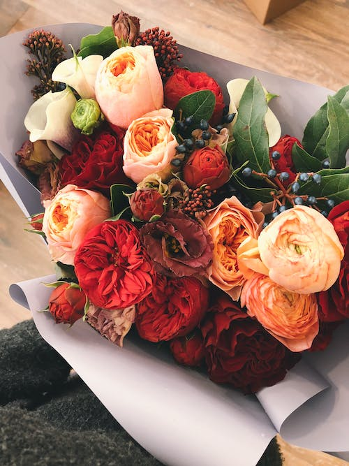

De-a lungul istoriei, florile au jucat un rol important în viețile oamenilor. Regăsite în miturile antice, poveștile populare și chiar textele istorice, florile au căpătat multiple semnificații, unele dintre acestea păstrându-se și astăzi.
Florile sunt cea mai frumoasă parte a naturii. Impresionând prin frumusețea și parfumul lor minunat, florile au fascinat omenirea timp de secole. Din punct de vedere științific, se spune că florile au apărut cu aproximativ 140 de milioane de ani în urmă, în perioada Cretacică, în Noua Caledonie, undeva la aproximativ 1.600 de km de Australia.
Privite ca un simbol al iubirii, fericirii și gingășiei, florile au capacitatea de a provoca emoții pozitive și de a înfrumuseța împrejurimile. De asemenea, studiile arată că pe lângă exprimarea unor emoții profunde, florile pot influența starea de spirit prin proprietățile lor terapeutice. De exemplu, un buchet colorat de flori într-o cameră de spital poate reduce stresul pacienților, grăbind astfel procesul de recuperare. În plus, mireasma plăcută furnizată de un aranjament cu flori proaspete creează o atmosferă relaxantă și îmbunătățește estetica unei încăperi.
Buchete de flori speciale - vrei să oferi un buchet de flori prin care să transmiți emoții? Alege buchete indiferent dacă este o ocazie specială sau o zi obișnuită! Îți garantăm nu doar flori frumoase, ci flori rezistente, de calitate superioară. Fii sigur că atât florile în sine, cât și buchetul, prin compoziție și aspect, vor stârni bucurie pe chipul destinatarului. Comanda flori prin site-ul Magnolia dacă îți dorești să oferi buchete de flori speciale. Prin serviciul nostru de livrare buchete flori la domiciliu poți să oferi buchete oriunde în Romania. Magnolia este o florarie online care te ajută să comanzi flori și cadouri pentru cei dragi și îți oferă o felicitare cadou pentru ca gândurile frumoase să poată fi mai ușor transmise. În funcție de preferințe, îți oferim un buchet de trandafiri, de lalele, frezii sau flori de sezon, iar noi livrăm florile în doar 2-4 ore. Livrare gratuită în peste 70 de localități.
Aranjamentele florale sunt o parte importantă a decorului pentru orice moment special: petreceri, nunți sau orice alt eveniment din viață. În floraria online Magnolia găsești cele mai spectaculoase, elegante sau vesele creații florale pentru a marca o zi specială. Aranjamentul de flori este o organizare a designului și culorii pentru crearea unei ambianțe, folosind flori, verdeață și alte accesorii florale. Florile sunt așezate într-un burete floral îmbibat cu apă pentru ca florile să reziste mai mult timp. Artiștii Magnolia creează atât cutii cu flori și coșuri cu flori, cât și aranjamente inedite, folosind mereu florile și accesoriile de cea mai bună calitate. Comandă cu încredere aranjamente florale deosebite pentru a oferi o surpriză celor dragi! Transportul este gratuit în peste 60 de localități și îți oferim Garantie 300%. Comandă online cutii cu trandafiri sau cu flori de sezon dacă vrei să faci un cadou în tendințe sau alege flori în coș dacă vrei să oferi cuiva drag un cadou clasic.
Dacă ești în căutarea unor buchete sau aranjamente de lux, am creat o colecție specială pentru momentele în care vrei să impresionezi. Specialiștii noștri au pregătit pentru tine buchete absolut fermecătoare pentru a marca așa cum se cuvine evenimentele importante din viața celor dragi sau doar pentru a face o surpriză cu adevărat spectaculoasă. Colecția noastră de lux nu este doar despre flori frumoase, ci și despre dăruirea unui cadou de neuitat. Astfel, fiecare buchet este ambalat cu grijă pentru a garanta că va fi livrat în cea mai bună formă posibilă. Comandă buchete sau aranjamente de lux online și, prin propriul serviciu de livrare flori în România, cadoul ales va ajunge la persoana dragă în doar 2-4 ore. Fiecare buchet din colecția noastră este o operă de artă și va fi, cu siguranță, apreciat de oricine primește sau vede aceste flori minunate.
- Cum comand?
- Cum platesc?
- Cand se livreaza?